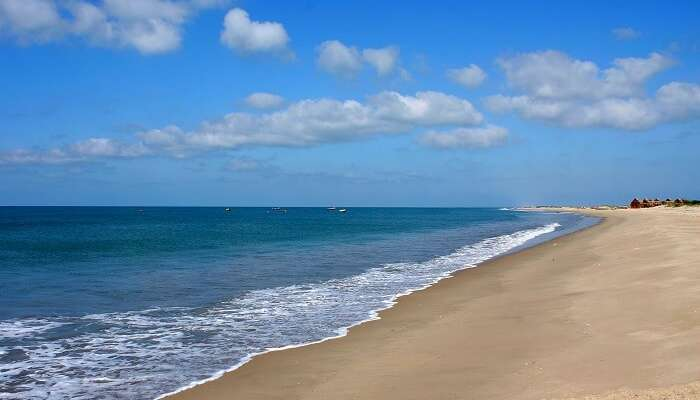
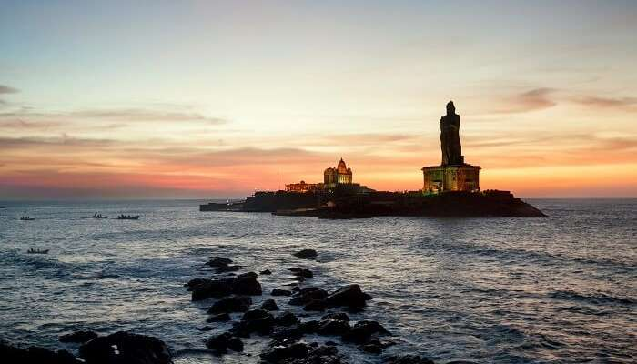
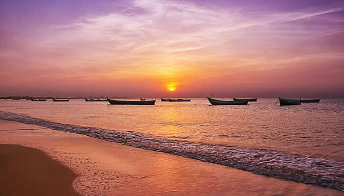

The coastline of Tamil Nadu is located on the southeast coast of Indian Peninsula, and forms a part of Coromandel Coast of Bay of Bengal and Indian Ocean. It is 1076km long and is the second-longest coastline in the country after Gujarat. Chennai, the capital of the state and an important commercial and industrial center in the country is located in the northern part of the coast with Kanniyakumari, forming the southern tip where Indian Ocean, Bay of Bengal and Arabian Sea meet. It also shares maritime border with Sri Lanka across the Palk strait in Gulf of Mannar. The coastal corridor consists of 13 districts with 15 major ports and harbors, sandy beaches, lakes and river estuaries. Tamil Nadu is the only state in India with territory on the both the eastern and western coastlines.
1.Dhanushkodi

Dhanushkodi is an abandoned town at the south-eastern tip of Pamban Island of the state of Tamil Nadu in India.[1] It is south-east of Pamban and is about 24 kilometres (15 mi) west of Talaimannar in Sri Lanka. The town was destroyed during the 1964 Rameswaram cyclone and remains uninhabited in the aftermath.Dhanushkodi is on the tip of Pamban island, separated from the mainland by the Palk Strait.The National Highway completed the 9.5-km-long road – 5 km from Mukuntharayar Chathiram to Dhanushkodi and 4.5 km from Dhanushkodi to Arichamunai. Tourists can visit by their own vehicle and end up with Pillars of Ashoka.
2.Kanyakumari

Kanyakumari (US: /kənˈjʌkʊmɑːriː/) (also known as Cape Comorin) is a town in Kanyakumari District in the state of Tamil Nadu in India. The southernmost town in mainland India, it is sometimes referred to as 'The Land's End'.
A popular tourist destination in India, it is famous for its unique ocean sunrise, sunset and moonrise, the 133-feet Thiruvalluvar Statue and Vivekananda Rock Memorial off the coast, and as a pilgrimage centre.[1] Lying at the tip of peninsular India, Kanyakumari is bordered on the west, south and east by the Laccadive Sea.[2] It has a coastal line of 71.5 km stretched on the three sides[3]
The town is situated 20 km south of Nagercoil, the headquarters of Kanyakumari District, and about 90 km south of Thiruvananthapuram, the capital of Kerala.
3.Tuticorin

Tuticorin Beaches. Harbor Beach Tuticorin – It is famous sandy beach in Tuticorin, which takes 20 minutes from city and 30 minutes from the Tuticorin Airport. Here you can enjoy the beautiful scenery of both sun rise and sunset. There is a park near this harbor beach.Thoothukudi is traditionally known for pearl fishing and shipping activities, production of salt and other related business. This is a port city in the southern region of Tamilnadu. This is a natural port, from this place freedom fighter V.O. Chidambaranar operated the Swadeshi shipping company during the British rule.